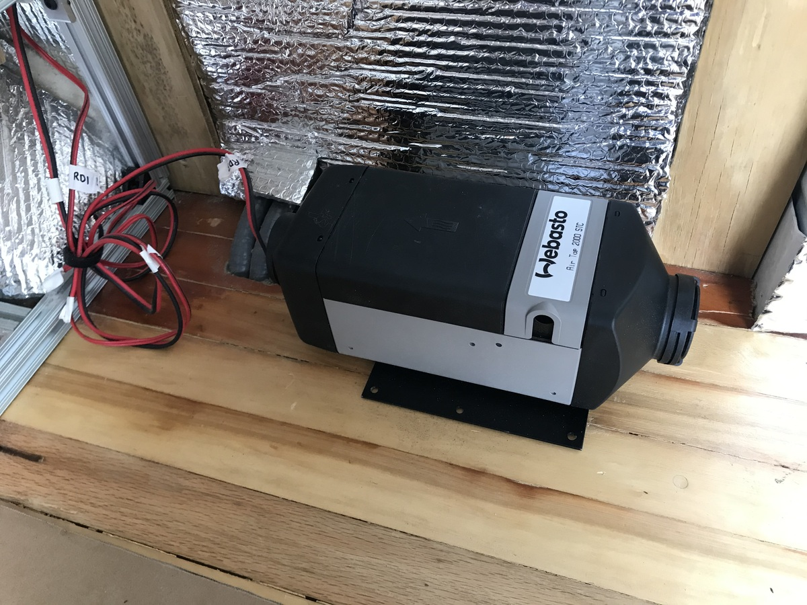
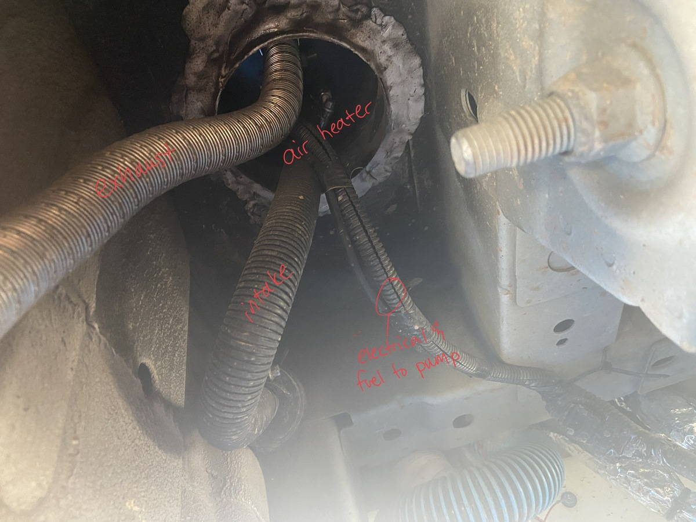
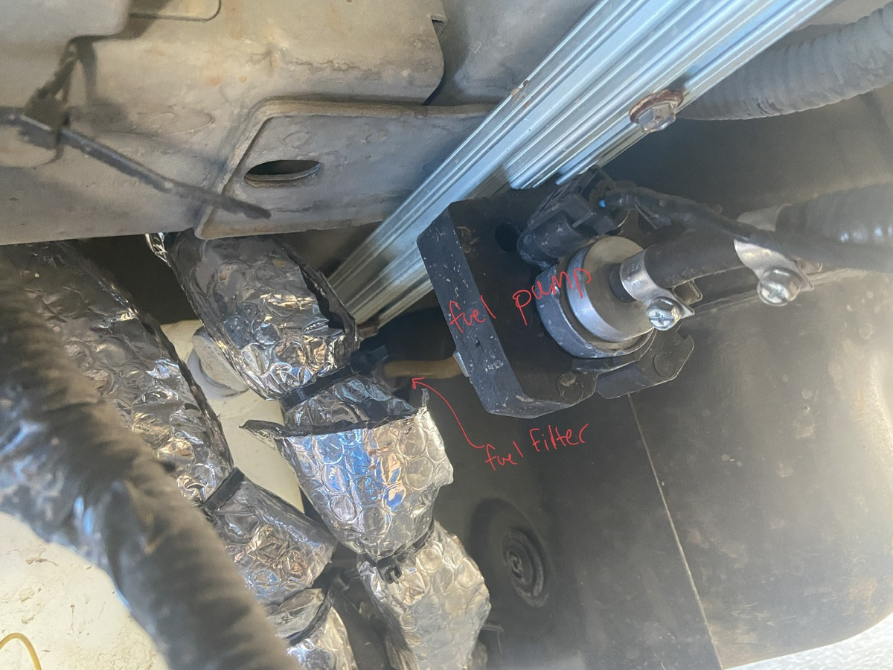
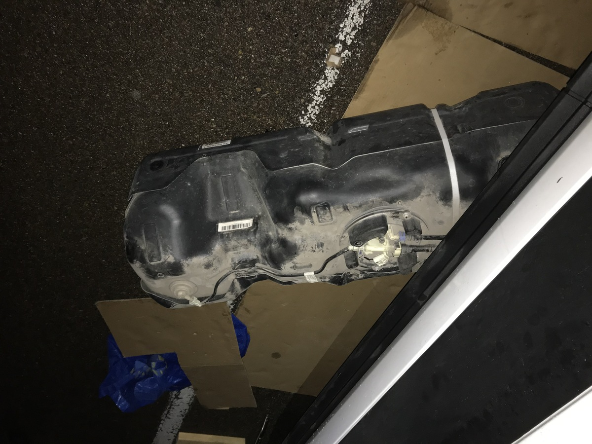
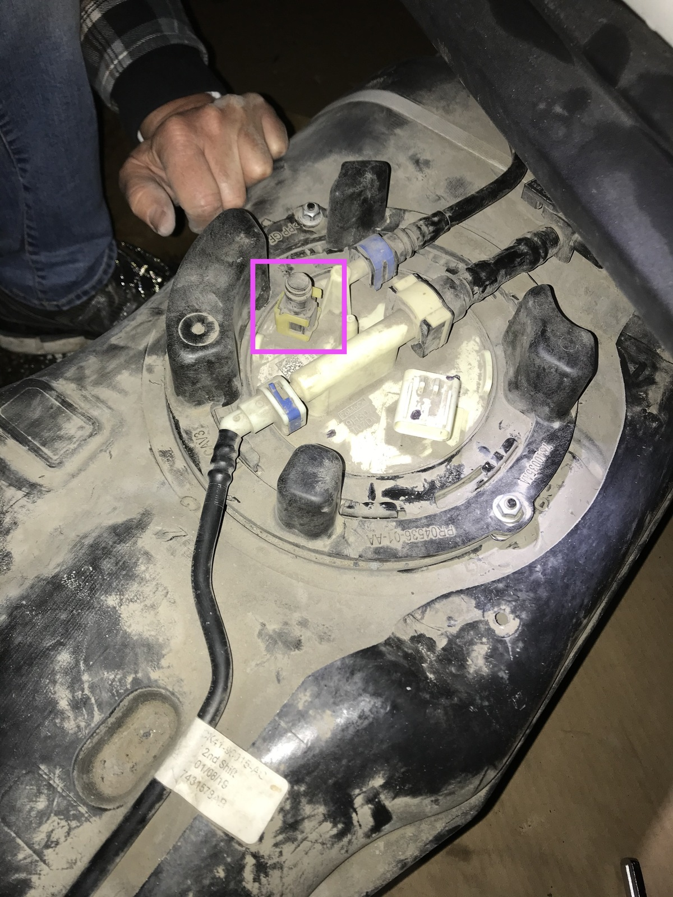

Mfg. / Part #: AirTop Webasto STC 2000 (European Version) Tags: heating

Air heating is provided by the Webasto AirTop STC 2000, which is a gasoline combusting heater. It is plumbed into the gasoline tank through the OEM auxiliary fuel port (see photos below).
High altitude adjustment was not added since it is enough to just run the heater on high every now and then to burn off any soot buildup.
Running the heater at “full blast” for at least 30 minutes at the end of each use prevents carbon buildup


Dropping the fuel tank to access the auxiliary fuel port

Showing the auxiliary fuel port that provides fuel to the pump:

Things to note:
I chose not to adjust, because doing the adjustment is like a shot in the dark without the proper CO2 sensing equipment, and it likely needs to be run hot every now and then to burn off soot anyway. For longer term stays at high altitude it should be taken to a professional shop to do the calibration.
Why do we need to adjust?
💡 Less O2 = rich mix = incomplete combustion (similar to high-altitude) = carbon buildup. Burning leaner (meaning the combustion expects less oxygen) means more excess oxygen is leftover after the stoichiactric process, where as a richer burn would use up all available oxygen and leftover carbon would be the excess (leading to carbon buildup issues).
When we increase in altitude we have less O2 in the air, but the CO2 stays relatively constant, so the proportion of CO2 to O2 increases. This is shown in the CO2 volume % vs altitude graph in the Webasto manual.
Next: 09-kitchen